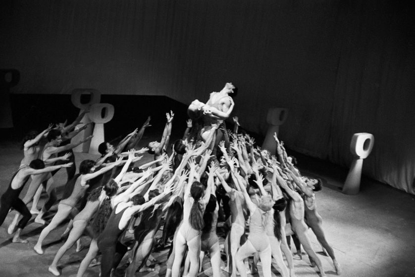

Critiques constructives J-7
22 septembre 2020

« Le massacre du printemps »
« Le sacre du printemps est tout autre chose encore (...). La chorégraphie est d'une regrettable médiocrité (…). Danseurs et danseuses (...) agitent leurs bras comme des moignons, et leurs jambes comme si elles étaient de bois (...). La laideur de toutes ces choses n'a d'égal que leur monotonie (...) ; et l'on ne voit pas d'exemple d'une pareille pauvreté d'imagination chorégraphique. »
« La musique de M. Stravinsky n'est guère moins surprenante que la chorégraphie de M. Nijinsky ; mais elle a une tout autre valeur ; elle est d'un musicien prodigieusement ingénieux et adroit (...). Cette musique (...) a pour caractère d'être la musique la plus dissonante et la plus discordante que l'on ait encore écrite (...). Jamais le système et le culte de la fausse note n'ont été pratiqués avec autant d'industrie, de zèle et d'acharnement. »
Le Temps, 3 juin 1913, Source gallica.bnf.fr / BnF.
« Comment un musicien tel que lui (Stravinsky) a-t-il pu se laisser gagner par la contagion et transposer dans son art cette esthétique de danseur ? »
« Il semble qu'après ce travail d'analyse, elle ne renferme point d'innovations prodigieuses, d'où puisse raisonnablement sortir quelque jour un rajeunissement de l'art (...). Et si le sens du rythme y apparaît avec une belle vigueur et une variété parfois saisissante, l'invention mélodique s'y révèle d'une extrême faiblesse (…). Pour tout dire, le fond de cet art est assez menu et d'une simplicité toute primitive. Il requiert impérieusement pour relever sa saveur un peu fade, ces artifices extérieurs violemment pimentés (...).
Le Figaro, 31 mai 1913, Source gallica.bnf.fr / BnF.
Et pour conclure cette semaine de critiques acerbes :
« Je vous ai dit que le public avait mené tapage pendant la représentation du Sacre du printemps. Il est surprenant que ce public, qui pense être une assemblée d'élite, n'ait point la politesse d'attendre, pour manifester son opinion, que la musique se soit tue et que le rideau soit baissé. J'ignore si le Sacre du printemps est un chef-d'œuvre ; et le public l'ignore aussi. Mais enfin c'est ce même public qui a raillé et sifflé Tannhæuser. Comment ce souvenir et quelques autres pareils ne lui imposent-ils pas un peu de retenue ? »
Le Temps, 3 juin 1913, Source gallica.bnf.fr / BnF.